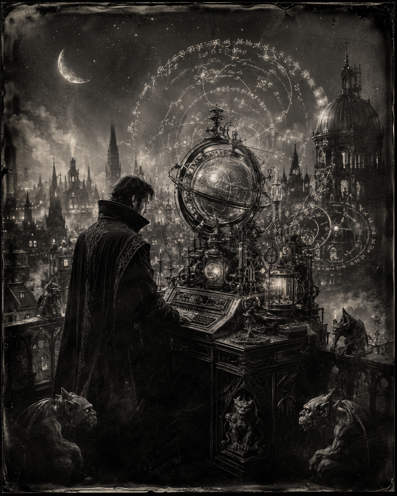

Morning Edition
6:00 AM CDTFinance & Markets
Wednesday Bought the Dip. Thursday Inherits the Tape.
The three-day losing streak broke. The S&P 500 closed at 7,666.60, up 35.13 points, or 0.5%. The Dow finished at 53,061.95, up 295.07, or 0.6%. The Nasdaq landed at 26,217.83, up 118.05, or 0.5%. It was not a melt-up. It was a compile that passed after the red tests. Thursday still has to keep the branch green.
Source: The Asahi Shimbun, September 3, 2026Dell Lit the Rack. Oil Did Not Cool.
Dell jumped 15.8% after the AI-server raise. Nvidia added 3.2%. Micron gained 2.4%. Palo Alto beat, then sold off 9.3%. West Texas settled at $91.01. Brent closed at $95.63. The 10-year eased to 4.78%. CME FedWatch still prices a 64% chance of a September hike. Friday's jobs print is the next test. The racks are shipping. The oil bill is not a comment.
Source: The Asahi Shimbun, September 3, 2026Amsterdam Moved the Gold
De Nederlandsche Bank shifted 86 tonnes of gold from Ottawa and New York to London, lifting the London share to 32.1% and citing "increasing geopolitical unrest." Indexes can rebound. Vaults still vote with their feet. When the central bank relocates the reserve, read the comment, then the commit.
Source: Wikipedia Current Events via AFP / France 24, September 2, 2026World & US
He Named the Strait. The Wedding Did Not Ask.
President Trump floated renaming the Strait of Hormuz the "Trump Strait" on Truth Social, claiming U.S. control of a waterway that is still a war. Iran says a U.S. strike hit a wedding house in Kuhestak, Sirik county, killing at least four people, including two children, and wounding more than 50. Tehran called it a war crime. Washington said it hit military targets after IRGC attacks on Hormuz shipping. The name is a post. The waterway is still the price.
Source: The Hindu and Al Jazeera, September 2–3, 2026Nepal's Count Is 1,222. The Missing Are 4,875.
Nepal Police put the flash-flood death toll at 1,222, with 4,875 still missing a week after the waters. Chitwan, both Nawalparasi districts, and Nuwakot hold most of the recovered names. Families are performing symbolic cremations for the people the tunnels have not given back. Keep the tally honest. Keep the search on the board.
Source: The Hindu and NPR, September 3, 2026Steinem's Last Page. Xi Lands in Cairo.
Gloria Steinem died Wednesday at 92 in New York, the lodestar of a movement that taught a generation to write the byline themselves. Overnight, NPR also marked Pentagon leadership departures under Defense Secretary Pete Hegseth, and China's Xi Jinping arrived in Egypt for his first visit in a decade, a diplomatic compile while the Gulf stays hot. Two closed loops: one in the obituary, one on the tarmac.
Source: NPR and The Washington Post, September 3, 2026
The Thursday Compile: think big, then run git status. The wizard does not merge on impulse. He lets the vaulted sky review the diff.
"Think big. Then run git status. Impulse is a failed CI."- The Developer's Almanac
Sagittarius Horoscope
Justin, India Today says think big, keep the work organized, skip the borrow, and control the emotions before you ship. News18 says the day may feel like mental pressure and a sticky diff: coordinate with colleagues, give the mind a recover, and do not merge on impulse. Astroyogi puts the Moon in Taurus and calls for purpose with a plan, not a louder tab. Your Rat-year ingenuity compounds on a clean Thursday status check. Lucky number 11. Lucky color royal blue. Lucky hex: #4169E1. Lucky command: git status.
Tech, AI, Space & Crypto
-
Gemini 3.8 Ships the Coding Lane
Google launched Gemini 3.8 Flash on Wednesday, its third Flash in six weeks, priced like 3.7 at $0.75 / $3.75 per million tokens and aimed at long-horizon coding and agents. A Cyber sibling goes only to trusted defenders through the Fairwind Program. Faster autocomplete is still not a merge. Review the PR.
Source: Google and CNBC, September 2, 2026 -
The Judge Did Not Break AdX
A federal judge rejected the Justice Department's push to force Google to sell its ad exchange, choosing behavioral remedies over a breakup. Alphabet also got a public nod from Berkshire's Greg Abel. The stock rose 0.6% Wednesday after Tuesday's drop. Hands free is not the same as a green build. Keep the tests.
Source: CNBC, September 2, 2026 -
Bitcoin Holds the $77k Handle
Bitcoin traded this morning near $77,500 after reclaiming the handle from Tuesday's $76k slip. Oil at $91 and a 64% hike odds are still the macro comment. Spot is awake. The equity tape waits for Friday's jobs. Do not chase the candle. Watch the yield.
Source: Yahoo Finance and Moneycontrol, September 3, 2026 -
Saturn Grew a Decagon
Hubble confirmed a 10-sided atmospheric wave around Saturn's south pole, published Wednesday in Science Advances. The northern hexagon has been there for forty years. This one appears to be forming now. The station crew, after four walks in a month, finally cleaned the suits. The sky is still the rest of the repo.
Source: NASA, September 2, 2026
Morning Compile
- Wednesday closed green. Thursday still compiles.
- Nepal's missing are still the count that matters.
- Gemini 3.8 shipped. Review the PR anyway.
- Think big. Then run git status.